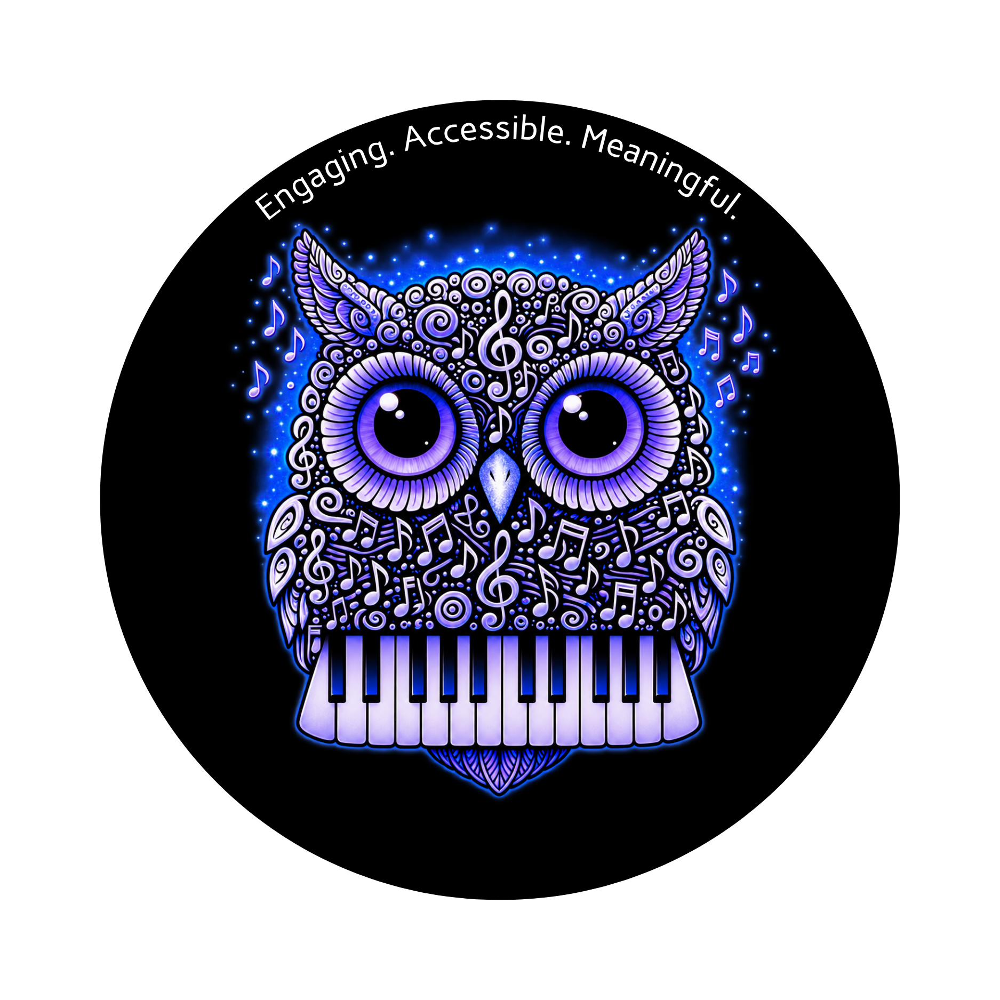

Hayden Simko • Music Educator • Instructional Designer
Learning experiences that resonate.
I'm Hayden Simko, a music educator, instructional designer, and M.Ed. student in Instructional Design and Educational Technology. This portfolio showcases my design philosophy, professional experience, and ongoing growth as a learning designer.

About this portfolio
Connecting music, learning, and design.
Rooted in music education and shaped by instructional design, this portfolio showcases my philosophy, professional experiences, and evolving work in instructional design. As I continue my studies and professional growth, it will serve as a collection of projects, reflections, and resources that demonstrate my approach to creating engaging, accessible, and meaningful learning experiences.
Explore the portfolio